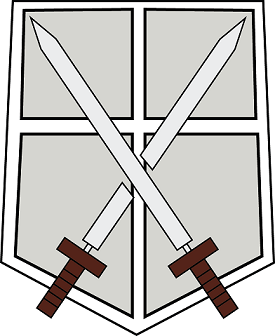
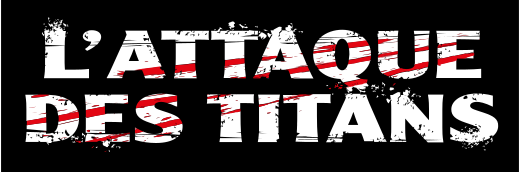
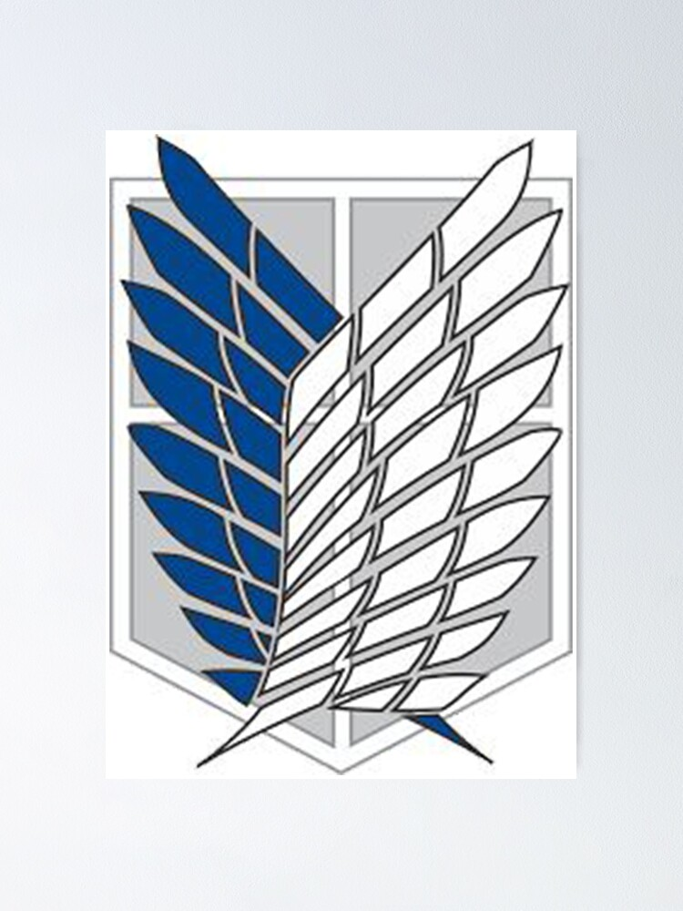

Shingeki no kyojin
Introduction
 Shingeki no kyojin connu sous le nom de l'attaque des titans est un shonen un manga d'Hajime Isayama publié de septembre 2009 à avril 2021. On se concentrera essentiellement sur la partie animé et non sur le manga. L'anime est réalisé par le studio WIT de la saison 1 à 3 et par MAPPA pour la saison 4.Le genre de l'anime est : Action ,dark fantasy ,horreur, mystère, tragédie et thriller.
Synopsis
L’histoire est centrée autour du personnage d’Eren Jäger et de ses deux amis Mikasa et Armin vivants dans un monde où l’humanité a été presque totalement eradiquer et le reste l’humanité vit entourée d’immenses murs pour se protéger de gigantesque Titans Humanoïdes. Le récit raconte le combat mené par l’humanité pour reconquérir les territoires perdus, tout en éclaircissant les mystères liés à ces fameux Titans.
Les personnages principaux
Eren
Mikasa
Armin
Jean
Livai
Connie
Sasha
Grisha
Avis
Alors pour tout vous dire cet anime est un grand coup de cœur, De par son implaccable réalité car oui SNK (Shingeki no kyojin) est un manga qui nous ramenera toujours á la réalité cruelle de notre monde et de ce qu'il a vécu car tres étrangement la série est comparable à notre monde, puis il y'a une ambiance qui vous glaçera le sang mais qui saura apporter ses moments comiques et de détentes. De plus ce qui fait qu'on s'accroche à l'anime est qu'on veut toujours en savoir plus car plus on en apprendre plus d'autres mystére s'ouvre et donc on n'en finit jamais toujours plus de secret qui plannent autour du Récit. ce qui est également épatant et la maitrise de l'histoire par son auteur qui la maitrise à 100% avec toute son histoire bien construite et nous le prouve tout le long du récit en nous mettant plein de petit clein d'oeil,foreshawing(procédé narratif par lequel un auteur suggère ce qui est à venir dans son récit).